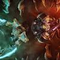
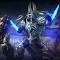

The World's Top StarCraft II Players Will Battle This Weekend
It’s not every day there’s a big StarCraft II tournament going on, and this weekend’s could offer a rematch of one of last year’s great showdowns.
The Intel Extreme Masters Season XIII StarCraft II started this week with 24 teams and will soon be down to 12 as the playoff stage gets underway this weekend. The $400,000 prize pool event is taking place in Poland where all of the best players will be looking to secure their spot at this year’s world championship with a first-place win.
Last year’s champion, Joona “Serral” Sotala, came out on top in his group, although it was his closest rival, Kim “Stats” Dae Yeob, who managed to make it into the playoff round without dropping a single game. If the two meet again during the bracket stage, which seems likely, fans could end up getting rewarded with a sequel to last November’s glorious six-game showdown between the two pros. Even if you’re not a huge StarCraft fan, watching arguably the current best Zerg and Protoss players in the world duke it out in one of 2019’s biggest tournaments to-date is worth checking out.
Matches between the remaining 12 players start on Saturday at 6:00 a.m. ET and continue into the afternoon. Then on Sunday the semifinals begin at 5:00 a.m. with the grand finals scheduled for 8:15 a.m. The entire event is streaming live on ESL’s StarCraft II Twitch channel and you can stay caught up on match times and results over on Liquipedia.
Read more....
BUG FIXES
General
Queens can now properly spawn a Creep Tumor on ramps in certain Heart of the Swarm campaign missions, and Co-op Missions.
Co-op Missions
Commander
General
Fixed an issue where incorrect portrait could appear for structures for certain commanders.
Alarak
Ascendants with multiple Power Overwhelming stacks no longer take bonus damage from the Black Death or Double Edged mutators.
Dehaka
Dehakas Drone no longer morphs into a structure while holding to a Xenon Crystal on The Vermillion Problem.
Dehakas Drone no longer morphs into a structure while holding to a Xenon Crystal on The Vermillion Problem.
Primal Host now properly attack enemy Creep Tumors with its Locusts.
Murvar now dies properly when Murvar’s Den is destroyed.
Enemy units will now properly take damage from Psionic Explosion when Dehaka devours a Psionic unit directly after spawning or respawning.
Fixed an issue where the first charge of Greater Primal Wurm could sometimes not be properly given to the player.
One Of StarCraft 2's Best Players Just Broke A Six Year Curse
One of StarCraft 2's best players has finally ended a curse that has spanned six years and seven premier tournament finals appearances. Eo "soO" Yoon Soon finally won a premier tournament by finishing first at IEM Katowice 2019, defeating Kim "Stats" Dae Yeob to take home $150,000 and lift a gigantic weight off his shoulders.
StarCraft 2 and its predecessor Brood War both track what's called the Kong Line - named after a professional player who made several finals appearances but was never able to take a tournament down. Throughout the history of the game, there have been various players who have held the title of "Kong", including famous ones like Lee "MarineKing" Jung Hoon. There's never been a player quite like soO, though, whose incredible consistency in appearing in seven finals prior to Katowice - including finishing second in every single Korean GSL premier league event in 2014 - made him both one of the best and one of the most disappointing players in all of StarCraft 2.
That changed last Sunday, when soO managed to finally win his first premier league event. He limped into the elimination rounds of the tournament with the worst record by far, the only player to make it in with a losing round robin record thanks to some lucky tiebreakers. From there, he eliminated the consensus best player in the world, Joona "Serral" Sotala, before falling behind Stats 2-0 in the grand finals. Historically, soO has crumbled under that kind of pressure, but he went on to win four straight maps and win his first title after six years of chasing them.
Most sports have their curses. The Madden cover curse, which stipulates that any athlete who appears on the cover of a Madden game will suffer an injury in the next season they play, is one famous example that crosses over into video games. But esports, as new as they are, have already developed some of the most rewarding stories of 2019 thanks to the fans' love of statistics and seeing the improbable become reality. Just last month, Shanghai Dragons, an Overwatch League squad that had lost an incredible 42 games in a row, finally got a win with the support of what seemed to be every person who had ever watch Overwatch. Fans love a good underdog story and, while soO was hardly ever the underdog in the tournaments he entered, his struggle to achieve what many expected of him resonated with fans.
Read more....

The Intel Extreme Masters Season XIII StarCraft II started this week with 24 teams and will soon be down to 12 as the playoff stage gets underway this weekend. The $400,000 prize pool event is taking place in Poland where all of the best players will be looking to secure their spot at this year’s world championship with a first-place win.
Last year’s champion, Joona “Serral” Sotala, came out on top in his group, although it was his closest rival, Kim “Stats” Dae Yeob, who managed to make it into the playoff round without dropping a single game. If the two meet again during the bracket stage, which seems likely, fans could end up getting rewarded with a sequel to last November’s glorious six-game showdown between the two pros.

Starcraft 2 4.8.3 Patch Notes
The latest patch for Shtarcraft 2 is now available. While the patch doesn’t add any major new content, it does fix a number of bugs in both the single-player campaign and multiplayer. There is also a new Twitch Prime offer teased for later this month.
Queens can now properly spawn a Creep Tumor on ramps in certain Heart of the Swarm campaign missions, and Co-op Missions.
Fixed an issue where toggling on mouse drag scroll could cause the cursor to appear in the middle of the screen.
One of StarCraft 2's best players has finally ended a curse that has spanned six years and seven premier tournament finals appearances. Eo "soO" Yoon Soon finally won a premier tournament by finishing first at IEM Katowice 2019, defeating Kim "Stats" Dae Yeob to take home $150,000 and lift a gigantic weight off his shoulders.
There's never been a player quite like soO, though, whose incredible consistency in appearing in seven finals prior to Katowice - including finishing second in every single Korean GSL premier league event in 2014 - made him both one of the best and one of the most disappointing players in all of StarCraft 2.